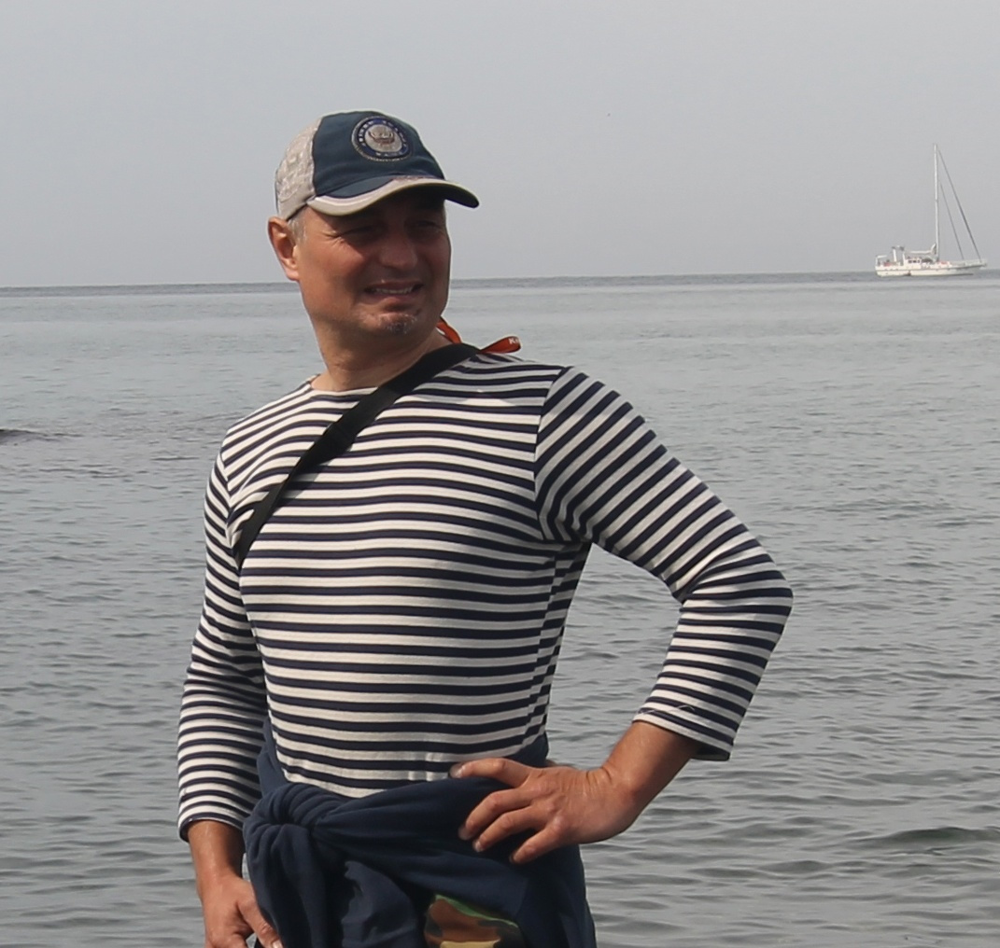

Тур по Горьковскому морю на морской парусной яхте
Морской простор и свежий ветер. Бег по волнам под парусом. Красивые бухты и песчаные пляжи. Встреча заката в море. Вы будете наслаждаться красотой окружающей природы: зелеными холмами, крутыми берегами и уединенными пляжами. Мы сделаем остановки для купания и пикников на берегу, где сможете отдохнуть, позагорать и насладиться вкусной едой.
Желающие могут принять участие в управлении яхтой: научиться поднимать паруса, научиться настраивать их в зависимости от ветра и конечно же побыть рулевым, постоять за штурвалом настоящего морского корабля.
Вы узнаете про историю региона, Горьковского моря и прибрежных городов. Увидите старинные церкви и живописные деревни. Вы узнаете про передовые достижения Советского Союза в области судостроения и увидите верфь, на которой возродили строительство скоростных судов на подводных крыльях и экранопланов.
Яхта
Наша яхта добротной финской постройки имеет просторный кокпит с защитой от дождя и солнца, шикарный полубак, на котором можно наслаждаться плеском волн, разбивающихся о форштевень, и много места на крыше рубки для принятия солнечных ванн.
К вашим услугам для размещения доступна двухместная носовая каюта люкс и четыре спальных места в салоне.
Яхта оборудована морским гальюном и умывальником. Есть камбуз для приготовления еды.
Капитан
Яхтенный капитан Евгений. За 20 лет в море оставил за кормой больше миль, чем их укладывается в экваторе. От экватора до полярных морей. Побывал во всех четырех Океанах. Работал инструктором в парусной школе самой именитой британской Королевской Яхтенной Ассоциации. С удовольствием расскажет про ветры и волны, приливы и отливы, про лоцию и навигацию. Научит вязать морские узлы, ставить паруса, рулить яхтой. Ну и конечно расскажет байки из богатой и романтичной морской жизни.
Программа круиза
День первый
Ваше приключение начинается в одном из уютных портов на берегу водохранилища. После приветствия с капитаном и командой вы получите краткий инструктаж по безопасности и правилам поведения на борту. Затем мы поднимем паруса и отправимся в плавание, наслаждаясь свежим воздухом и великолепными пейзажами.
Мы осмотрим с воды Алексеевскую судоверфь, на которой строят суда на подводных крыльях, сделаем остановки для купания и пикников на берегу, где сможете отдохнуть, позагорать и искупаться. Искупаемся в открытом море и встретим закат.
На ночевку мы встанем в уединенной бухте рядом с заповедным лесом. На берегу нас ждет пикник и песни у костра.
День второй
Проснувшись под пение птиц, мы завтракаем на борту и переходим на шикарный песчаный пляж по-соседству. Получив утреннюю дозу витамина D, продолжим наш путь по просторам Горьковского моря. Побываем еще в одной живописной бухточке. Осмотрим церковь в деревне Катунки, на которую открывается шикарный вид с воды. Ну и конечно старинную Василёву слободу, а ныне город Чкаловск, в котором помимо памятников советской архитектуры, посвященных знаменитому уроженцу Василёво, летчику-герою Чкалову, сохранились и здания позапрошлого века.